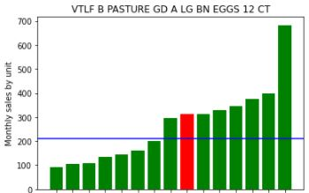
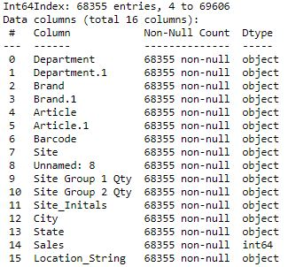
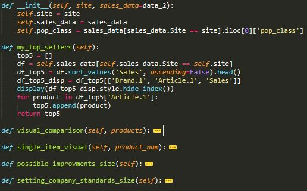

- Github
- codyjamesbrooks@gmail.com
Applying Python, Pandas, and Object-Oriented Programming in a retail environment

Project Goal
The goal of this project was to use python, pandas, and object-oriented programming to create a tool that would assist me in pointing out specific changes my department managers could make in order to improve overall sales at the grocery store I was managing. Specifically, I was trying to answer the question "What are the products in my store that could be selling better?". As the project contains confidential sales data, it does not have a public repo on GitHub. But below I have gone into details regarding the methods that I used to approach this challenge.
The Data Set
My position allowed me access to all of the sales data, at a product level, across every store in the company (155 different stores spread across the western US). I set the sales data up in a pandas data frames as such, first I broke it up by department, then by month. This resulted in one data frame for each department in the store (grocery, dairy, etc..), for each month of the year. Inside each data frame, every individual store would have rows for each product that it sold during the given month. To give you an idea, that is about 70,000 lines of data per departments in the store. The next step in the project involved figuring out which stores to compare side by side in order to determine the items that had the most room for improvement.Grouping Stores
I decided to group the stores together based on the population of the city the store was located in. To do that I made use of an US Census API. The API allowed me to dynamically group stores in a manner that would not need to be updated manually as city populations changed. Having a population-based grouping in place allowed me to effectively judge an items sales, at each store, by comparing that same items sales at stores in similarly sized cities.
Object-Oriented Programming
From there I used OOP to set up a class that would allow each store to individually instantiate itself as the primary store viewing the data. That allowed each store to utilize each method that I created, with their store in mind. Below I listed a couple of the methods that I created:- Possible Improvements – This method highlighted items where a store was performing worse than stores located in similarly sized cities. This indicates that the store should consider repositing this item, as it has the highest potential for improvement.
- Setting Company Standards – This method highlighted items that a store was selling better than any other store in their population grouping.
- Single item visual – Method that allowed a store to look at any item individually to judge how it is performing with that item. Best used to track an individual items improvement over time.